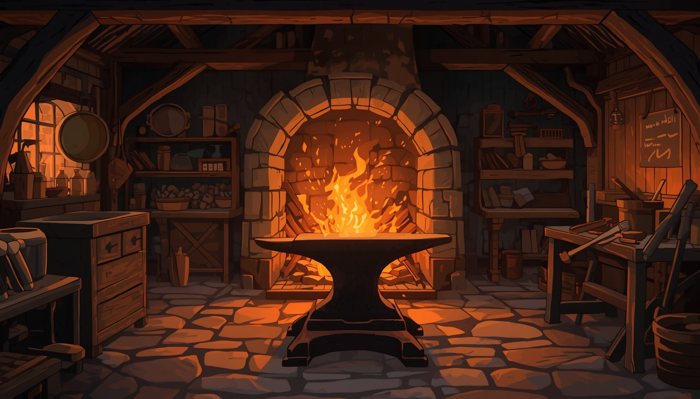

SINOPSIS
Kebohongan yang Menyelamatkanmu
Selama ini kau menjalani kehidupan damai di desa terpencil bersama kakekmu, seorang pandai besi tua. Tangan yang kau kenal selalu berbau besi dan arang, mengajarkanmu cara menempa logam.
Namun di hari pemakamannya, seorang pria bertubuh besar dengan wajah penuh luka, Valerius, muncul dari balik hujan. Ia mengungkap kenyataan pahit: kakekmu membuang identitas aslinya untuk menyembunyikanmu.
Kini, dengan relik Besi Bintang (Star Iron) menggantung di dadamu—benda terkutuk yang menjadi alasan seluruh keluargamu dibantai—kau harus melangkah keluar dari bayang-bayang masa lalu.
